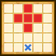

| Lv: | 130 |
|---|---|
| HP: | 737 |
| MP: | 366 |
| ATK: | 177 |
| DEF: | 246 |
| AGL: | 402 |
| WIS: | 343 |
| Move: | 2 |
| Weight: | 35 |
| Weaknesses: | |
|
/ | |
|
|---|---|---|---|---|---|
| Resistances: | |
|
/ | |
|
| Immunities: | |
| Abilities | ||||||
|---|---|---|---|---|---|---|
| Level | Type | Name | MP | Element | Range | Description |
| 1 | Blunt | 9 |  |
 3 |
Occasionally greatly lowers 1 enemy's ATK for 3 turns | |
| 20 | マジックアイス | 37 |  |
1-3 |
Deals moderate Crack-type spell damage to 1 enemy, occasionally lowers Spell Res for 3 tunrs | |
| 44 |  |
Dual Kaboom | 123 |  |
 Front |
Deals major Bang-type spell damage to all enemies in area of effect 2 times |
| Base Perks | ||
|---|---|---|
| Level | Name | Description |
| 1 | Max MP +10 | Raises max MP by 10 |
| 1 | WIS +10 | Raises max WIS by 10 |
| 100, 110, 120, 130 | Dual Kaboom potency +2% | Raises Dual Kaboom potency by 2% |
| Awakening Perks | ||
|---|---|---|
| Awakening | Name | Description |
| 1 | Enchanting Echo | When casting: Rarely unleashes the spell 2 times in succession, lowers damage/recovery of 2nd spell by 50% This perk can be triggered by non-damage dealing abilities |
| 2 | Frizz Res +25 | Raises Frizz resistance by 25 |
| 3 | Runaway Magic Chance +10% | Raises Runaway Magic chance by 10% |
| 3, 5 | Dual Kaboom potency +5% | Raises Dual Kaboom potency by 5% |
| 4 | Sizz Res +25 | Raises Sizz resistance by 25 |
| 5 | Enchanting Echo Chance +10% | Raises chance of Enchanting Echo by 10% |
| 1, 2, 3, 4, 5 | Stats Up | Raises HP, MP, ATK, DEF, WIS and AGL by 5% |